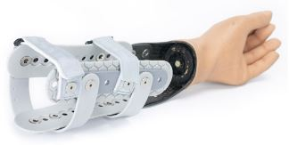
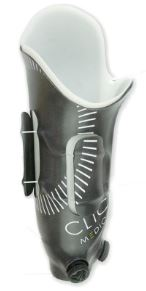
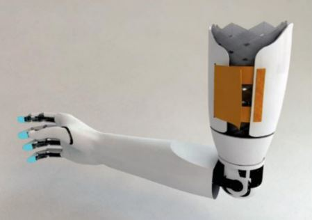

3. ESTADO DEL ARTE
3.1. AMPUTACIÓN DE MIEMBRO SUPERIOR MUÑON
La extirpación de un miembro se da debido a traumatismos, deficiencia de flujo sanguíneo, infecciones, tumores, quemaduras, accidentes. Posterior a la amputación se sigue un tratamiento con el fin de formar un muñón con las siguientes características:
• Forma cónica o semicónica.
• El revestimiento cutáneo tiene que estar bien, es decir la piel no tiene que estar muy estirada ni laxa.
• Las extremidades óseas deben estar recubiertas de suficiente tejido celular.
• Tener una buena movilidad y fuerza de palanca.
• Debe de poseer suficiente irrigación sanguínea para que no exista cianosis, hiperemia o edema.(Ramos María,2018)
3.2. SOCKETS EXISTENTES
Existen algunos sockets en el mercado que buscan contrarrestar los efectos negativos de la mala ventilación, tal es el caso de:
3.2.1. SOCKET-LESS SOCKET, posee un transradial transformado, el cual se puede envolver alrededor de la extremidad y microajustarse de la extremidad para brindar un comodidad óptima,el zócalo más ligero y más fresco, su marco abierto permite una buena dispersión de calor.(MartinBionics, 2018)

Figura 1. Protesis transradial que se envuelve alrededor del muñón con diseño de marco abierto
(Socket-less Socket-ICON Below Elbow- Transradial Transformed. 2018, de MartinBionics)
3.2.2. REVOFIT, es un socket ajustable que se adapta a la necesidades de las tallas cambiantes diarias del muños de los usuarios, están compuestos por paneles que son graduados manualmente por medio de un sistema de cierre BOA, una perilla que permite al usuario modificar la presión y el ajuste del socket. Su encaje interno blando en Thermolyn suprasoft asegura al usuario un mayor confort, ya que su flexibilidad permite crear presión en diferentes zonas de los amputados transfemorales. La versión moderna están imbuidas con iones de plata, los cuales ejercen un efecto antibacteriano sobre el miembro residual del usuario.(Protésica, 2015)

Figura 2.Socket de miembro inferior con paneles ajustables
por medio del sistema BOA (perilla que permite ajustar)
(Socket ajustable Revofit. 2018, de Protésica)
3.2.3. SUSPENSIÓN DE SOCKET MEDIANTE MALLAS, se basa en el mecanismo artesanal de atrapadedos. El sistema está conformado por un entrelazado de tiras de material plástico que recubren el miembro residual.

Figura 3.Socket con arreglo de malla basado en el principio de atrapa de dedos.
(Ramirez Diaz, Flores Luna, Garcia del Gállego, Dorador González. (2011). Rediseño de interfaz para prótesis mecánica transhumeral. 2018, de Centro de Diseño e Innovación Tecnológica, Universidad Nacional Autónoma de México)
Tabla 6
Propuestas de solución y proceso de evaluación.

En el presente proyecto se expondrán tres propuestas de solución y el proceso de evaluación de estas tres propuestas para un socket de ajuste mecánico que permita la ventilación correcta del miembro residual, respetando parámetros importantes, tales como las propiedades antimicóticas del material a usar, el coeficiente de fricción y resistencia a las cargas. Posteriormente, se seleccionará la propuesta más viable luego de evaluar la funcionalidad del dispositivo durante su uso, para continuar con el desarrollo del diseño, fabricación y prueba de esta.
Tabla 7
Evaluación de las soluciones existentes

Tabla 8
Requerimiento de diseño